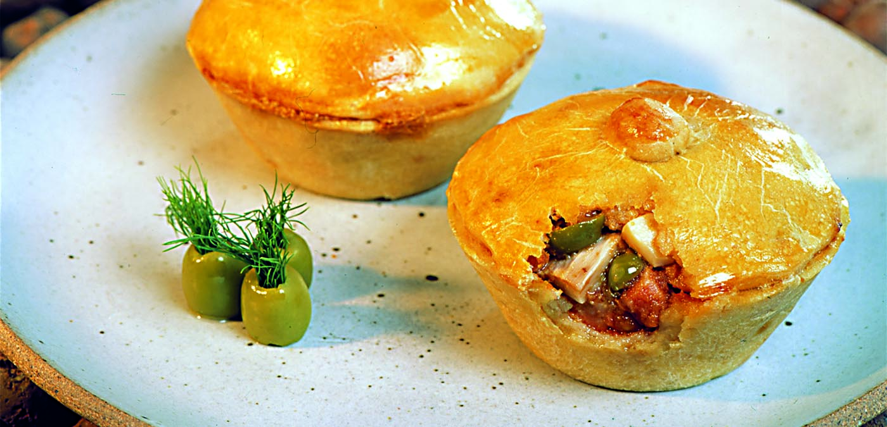

Nossos produtos culinários são inspirados nos sabores, ingredientes e tradições do Centro-Oeste brasileiro. Buscamos oferecer uma experiência gastronômica que valorize a cultura regional, combinando receitas tradicionais com qualidade, criatividade e muito sabor.
Em nosso catálogo, destacam-se produtos preparados com ingredientes típicos da região, como pequi, milho, mandioca, carne seca, queijos, doces caseiros e diversos temperos especiais. Cada produto é desenvolvido com cuidado, desde a seleção dos ingredientes até o preparo e a apresentação, garantindo qualidade e autenticidade em cada experiência. Também oferecemos opções de doces, compotas, conservas, pratos típicos e produtos artesanais que representam a diversidade da culinária de Goiás, Mato Grosso, Mato Grosso do Sul e do Distrito Federal. Nosso objetivo é levar aos consumidores um pouco da identidade e da riqueza gastronômica do Centro-Oeste. Mais do que alimentos, nossos produtos carregam histórias, tradições e sabores que fazem parte da cultura regional. Por isso, trabalhamos para que cada item oferecido tenha um sabor especial e represente o melhor da culinária do Centro-Oeste brasileiro.| Produto | Estado/Origem | Categoria | Descrição | Preço |
|---|---|---|---|---|
| Empadão Goiano | Goiás (GO) | Salgado | Torta tradicional recheada com frango, linguiça, queijo e outros ingredientes | R$ 15,00 |
| Chipa | Mato Grosso do Sul (MS) | Salgado | Pão de queijo de origem paraguaia, muito consumido na região | R$ 6,00 |
| Arroz com pequi | Goiás (GO) | Prato típico | Arroz preparado com pequi, ingrediente bastante característico do Cerrado | R$ 18,00 |
| Pamonha | Goiás (GO) | Comida típica | Preparação feita principalmente com milho, podendo ser doce ou salgada | R$ 8,00 |
| Mojica de pintado | Mato Grosso (MT) | Prato típico | Ensopado tradicional preparado com peixe e mandioca | R$ 25,00 |

Para mais informações, acesse nosso portifólio.
Voltar para a página inicial